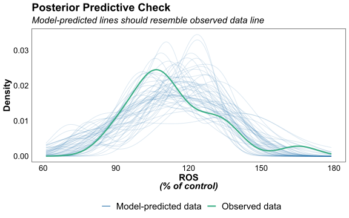

1 Reactive Oxygen Species
❖ Data
| Mouse | Condition | ROS_perc |
|---|---|---|
| BB1N | N | 105.77 |
| BB2N | N | 88.03 |
| BB3N | N | 93.23 |
| BB4N | N | 107.81 |
| BB5N | N | 105.17 |
| BA1H | IH | 101.00 |
| BA2H | IH | 113.26 |
| BA3H | IH | 93.95 |
| BA4H | IH | 107.22 |
| BA5H | IH | 136.96 |
| BA6H | IH | 104.32 |
| BB1H | IH | 108.34 |
| BB2H | IH | 119.55 |
| BB3H | IH | 127.41 |
| BB4H | IH | 130.44 |
(Sample of 15 data points)
❖ Correlations
1.1 ROS (as % increase vs control)
1.1.1 Data Exploration
| Condition | Mean | SD | Variance | CoV | IQR | Min | Max | Skewness | Kurtosis | n |
|---|---|---|---|---|---|---|---|---|---|---|
| N | 100 | 8.806 | 77.542 | 0.088 | 16.161 | 88.028 | 107.809 | −0.745 | −2.14 | 5 |
| IH | 119.99 | 19.128 | 365.87 | 0.159 | 27.275 | 93.946 | 165.286 | 0.997 | 1.29 | 13 |

1.1.2 Models & Diagnostics
1.1.2.1 Welch t-test
Not used in the paper, shown for reference.
We mimic a Welch t-test using a mixed-effects model and observation-level random effects.
| Model Summary | |||||
|---|---|---|---|---|---|
| Parameter | Coefficient | SE | 95% CI | t(15.11) | p |
| Condition1 | -9.99 | 3.30 | (-17.03, -2.96) | -3.03 | 0.008 |
1.1.2.2 Generalized Linear Mixed Models
Exploring candidate models:
❖ Model call:
```{r}
glmmTMB(formula = ROS_perc ~ Condition, data = data, family = Gamma("log"),
REML = TRUE, ziformula = ~0, dispformula = ~1)
```❖ Performance:
performance::performance(mod)| AIC | AICc | BIC | R2_conditional | R2_marginal | RMSE | Sigma |
|---|---|---|---|---|---|---|
| 163.24 | 164.95 | 165.91 | 7.01e-03 | 16.16 | 0.14 |
❖ Residuals:
performance::check_model(
mod, panel = FALSE,
check = c("pp_check", "qq", "reqq", "normality", "linearity", "homogeneity")
)$PP_CHECK
$HOMOGENEITY
$QQ

❖ Predictions:
Simulating data from the model for pseudo “Posterior Predictive” plots.
♦ Simulated data vs observed data:

♦ Simulated statistics vs observed ones:

❖ Potential outliers:
| ID | ROS_perc | Condition |
|---|---|---|
| 17 | 165.29 | IH |
❖ Model call:
```{r}
glmmTMB(formula = ROS_perc ~ Condition, data = data, family = gaussian("log"),
REML = TRUE, ziformula = ~0, dispformula = ~1)
```❖ Performance:
performance::performance(mod)| AIC | AICc | BIC | R2_conditional | R2_marginal | RMSE | Sigma |
|---|---|---|---|---|---|---|
| 165.29 | 167.01 | 167.96 | 7.01e-03 | 16.16 | 17.14 |
❖ Residuals:
performance::check_model(
mod, panel = FALSE,
check = c("pp_check", "qq", "reqq", "normality", "linearity", "homogeneity")
)$PP_CHECK
$NCV
$HOMOGENEITY
$QQ

❖ Predictions:
Simulating data from the model for pseudo “Posterior Predictive” plots.
♦ Simulated data vs observed data:
♦ Simulated statistics vs observed ones:

❖ Potential outliers:
| ID | ROS_perc | Condition |
|---|---|---|
| 17 | 165.29 | IH |
1.1.3 Effects Analysis
```{r}
glmmTMB(formula = ROS_perc ~ Condition, data = data, family = Gamma("log"),
REML = TRUE, ziformula = ~0, dispformula = ~1)
```1.1.3.1 Coefficients
❖ All effects (Wald):
parameters::parameters(
mod, exponentiate = should_exp(mod),
p_adjust = "none", summary = TRUE, digits = 3
)| Model Summary | |||||
|---|---|---|---|---|---|
| Parameter | Coefficient | SE | 95% CI | z | p |
| Fixed Effects | |||||
| (Intercept) | 100.000 | 6.310 | (88.37, 113.17) | 72.980 | < .001 |
| Condition2 | 1.200 | 0.089 | (1.04, 1.39) | 2.454 | 0.014 |
| Dispersion | |||||
| (Intercept) | 0.141 | (0.10, 0.20) | |||
| Model: ROS_perc ~ Condition (18 Observations) | |||||
❖ Main effects (Wald Chi-Square):
car::Anova(mod, type = 3)| term | statistic | df | p.value |
|---|---|---|---|
| Condition | 6.02 | 1 | 0.014* |
❖ Main effects (Likelihood Ratio Test):
LRT(mod, pred = "Condition")| model | df | aic | bic | log_lik | deviance | chisq | chi_df | pr_chisq |
|---|---|---|---|---|---|---|---|---|
| mod_reduced | 2 | 158.41 | 160.19 | -77.20 | 154.41 | NA | ||
| mod_full | 3 | 154.79 | 157.46 | -74.39 | 148.79 | 5.62 | 1 | 0.018* |
Our LRT() method removes the predictor plus all its interactions
1.1.3.2 Marginal Effects
Marginal means & Contrasts of each predictor:
❖ Marginal Means:
emmeans::emmeans(mod, specs = pred, type = "response") Condition response SE df lower.CL upper.CL
N 100 6.31 17 87.5 114
IH 120 4.70 17 110.5 130
Confidence level used: 0.95
Intervals are back-transformed from the log scale ❖ Contrasts:
emmeans::emmeans(mod, specs = pred, type = "response") |>
contrast(method = "pairwise", adjust = "none", infer = TRUE) contrast ratio SE df lower.CL upper.CL null t.ratio p.value
N / IH 0.833 0.0619 17 0.713 0.975 1 -2.454 0.0252
Confidence level used: 0.95
Intervals are back-transformed from the log scale
Tests are performed on the log scale ❖ Boxplot: